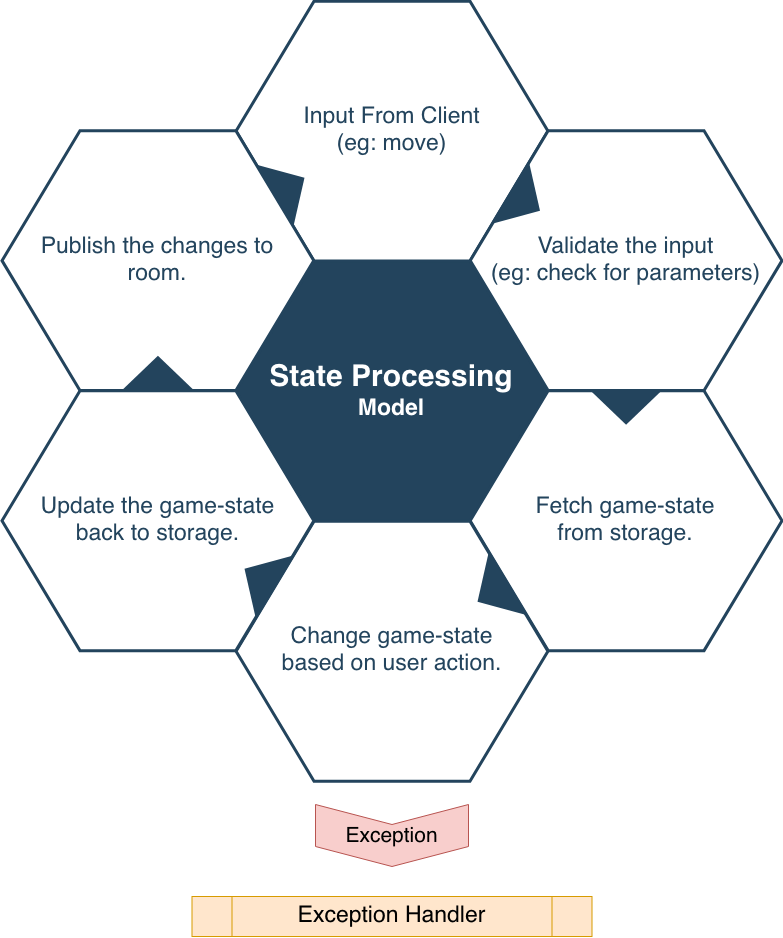
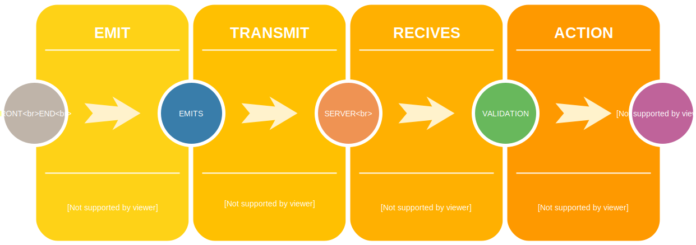

Node Game
Writing a simple nodejs game backend.
With a case study of Chess.
About Me
Vineesh Narikutty Pacha
Backend Developer @ TechJini.
Codes NodeJs and Python.
Loves Rust, Golang and Elixir.
Game Backend
What is game backend?
What languages generally we use to build game backend?
Sockets
What, Why, When ?
REST vs Sockets

Socket.io
What is websocket?
Why Socket.io

Chess
Case study of writing chess backend using NodeJS

Architecture : Simple

GameState
- GameState is a snapshot of the current game.
- Design should cover entire game flow.
Sample Game State
gameState = {
players: {
p1 : {
...
},
p2 : {
...
}
},
state : {
board : [],
turn : []
},
winner : null,
turn : null
}
State Processing Model
Code Time </>
Lets look at some code for socket fundamentals.
Socket Backend
const app = require('express')();
const http = require('http').Server(app);
const io = require('socket.io')(http);
const port = process.env.PORT || 3000;
io.on('connection', (socket) => {
socket.on('chat message', function(msg){
io.emit('chat message', msg);
socket.to({{socketId}}).emit('chat message', msg);
});
});
http.listen(port, () => {
console.log('listening on *:' + port);
});
Socket Front End
<script> src="https://cdn.socket.io/socket.io-1.2.0.js"></script>
<script>
$(function () {
var socket = io();
/*
* On some event trigger below code
*/
socket.emit('chat message', $('#m').val());
socket.on('chat message', function(msg){
console.log(msg)
});
});
</script>
Rooms
- Rooms are similar to groups in chat
- Most board games are built on this concept
Game Actions
- Create an instance of gameEngineClass.
- instance is responsible to validate and performs action
- instance will have state, how ever, state could be maintained with game-state.
- Winner declaration, and resetting the game board.
* But it may take some time to do so.
* In fact every live game we see, its all written from scratch.
* Here we will do this using [chess.js](https://github.com/jhlywa/chess.js/) .
Flow
Code Time
Lets take a look at few more code for sockets
Joining Room
/**
* Front end code
*/
io.on('connection', (socket) => {
/**
* During some action
*/
socket.join('room1');
/**
* Inorder to leave a room
*/
socket.leave('room1');
});
Emitting to a room
/**
* Backend code
*/
io.to('room1').emit('data', {data : 0});
/**
* Front end, on a subscribed client
*/
io.on('connection', (socket) => {
socket.on('data', (msg) => {
console.log(msg); //{data : 0}
});
});
Move validation with library.
Lets look at chess library.
npm install --save chess.js
Initiating library
const Chess = require('chess.js').Chess;
const chess = new Chess();
console.log('Printing the current board state');
console.log(chess.ascii());
/** Output */
+------------------------+
8 | r n b q k b n r |
7 | p p p p p p p p |
6 | . . . . . . . . |
5 | . . . . . . . . |
4 | . . . . . . . . |
3 | . . . . . . . . |
2 | P P P P P P P P |
1 | R N B Q K B N R |
+------------------------+
a b c d e f g h
Making moves
/**
* moves can be triggered in different ways
*/
chess.move('e4'); // Standard algebraic notation
chess.move({from : 'e7', to : 'e5'}) // or with more readable way.
chess.move('Nh3'); // Moves the night to h3
chess.move({from : 'f8', to : 'a3' }) // Moving the bishop
Validity of moves.
/**
* Checking the validity of the move
*/
console.log('Valid move output', chess.move('b3'));
{
color: 'w',
from: 'b2',
to: 'b3',
flags: 'n',
piece: 'p',
san: 'b3'
}
console.log('Invalid move output', chess.move('b2'));
null
Check! ?
/**
* Check if the game is in check state
*/
console.log(chess.in_check());
// returns boolean
console.log(chess.in_checkmate());
// returns boolean
Further! ?
Chess have lots of situations like.
* Draw
* Settlement
* Castling, etc
/**
* Check if the game is in check state
*/
console.log(chess..in_draw());
// returns boolean
console.log(chess.in_stalemate());
// returns boolean
Scaling
Vertical scaling and Horizontal scaling.
Socket scaling using broker.
game-state scaling using cache servers.
Message queues.
Reverse proxy using nginx.
Challenges
- Node is not designed for game backend.
- Handling computations on event loop.
- Importance of doing CPU intensive tasks using golang/rust.
- Need of timers.
Suggestions
- forget es5 approach.
- es6 / typescript will be lifesavers.
- Security with tokens
- rather than writing from scratch, you could use frameworks.[But don't expect a long term support]
- do profiling to find out time consuming functions.
- For production use game engines.